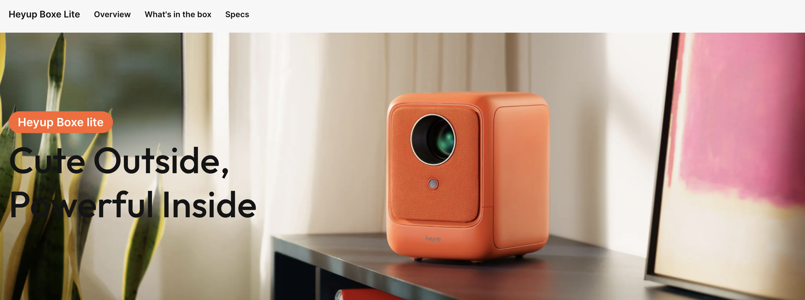
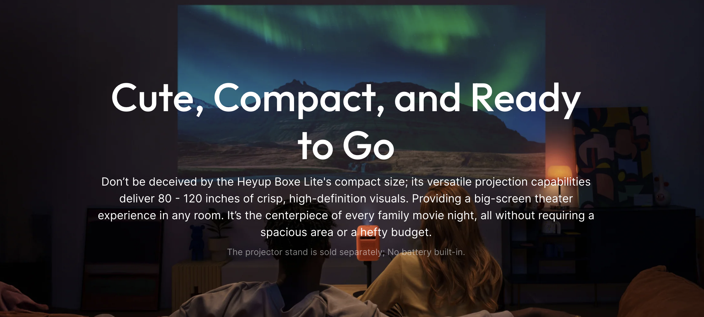
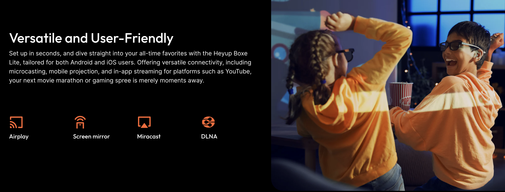
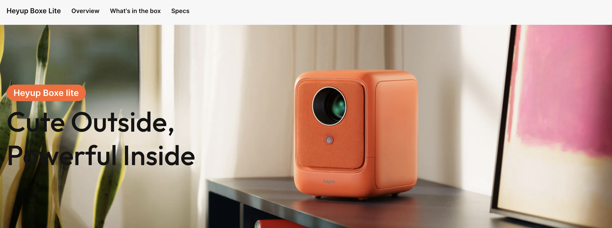
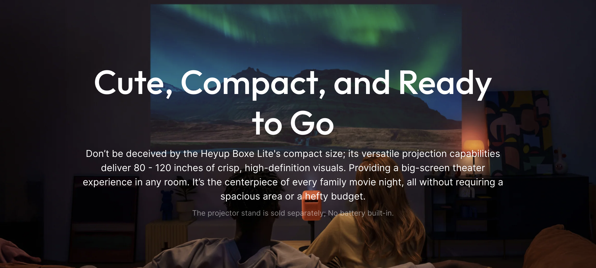
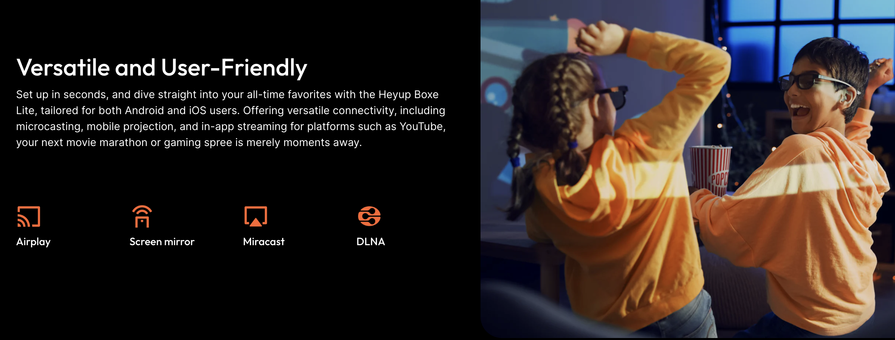

About Me
Hello! I'm Josh Horritt, a passionate UX Writer, copywriter, and designer from the UK. I love creating thoughtful designs and engaging microcopy that resonate with users. With skills in CSS, JavaScript, HTML, Figma, and Webflow, I craft seamless digital experiences and bring these delightful experiences to life.
What I Bring to the Table
- Coding Skills: Proficient in JavaScript, HTML, and CSS, enabling me to create and enhance digital experiences.
- Editorial Leadership: Led teams of writers and editors, ensuring consistent quality and brand adherence in fast-paced environments.
- UX Writing: Crafted user-friendly microcopy for digital products, enhancing user experience and engagement.
- Copywriting and Branding: Developed persuasive copy for global brands such as Nubia and ANTA, strengthening their identities and driving customer engagement.
- User Research & Ideation: Conducted thorough user research and participated in ideation sessions to align content with user needs and business goals.
- Design Collaboration: Worked closely with designers using Figma and Webflow to create design sprints, wireframes, and prototypes.
- Content Creation: Produced high-quality blog articles on diverse topics, increasing readership and social media shares.
- Team Management: Managed and mentored diverse teams, overseeing assignments, deadlines, and performance.
- Editing and Proofreading: Maintained high editorial standards for accuracy and consistency.
With credentials in coding, design, and copywriting, plus a UX certification from Google, I've developed strong skills in user-centered design. Outside of work, I love learning languages. I speak English and Chinese, and I'm currently learning Polish, with more to come.
I'm excited to bring my skills to innovative companies. Let's connect and see how I can help your team succeed!

 




